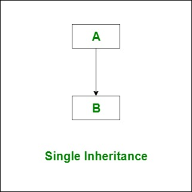
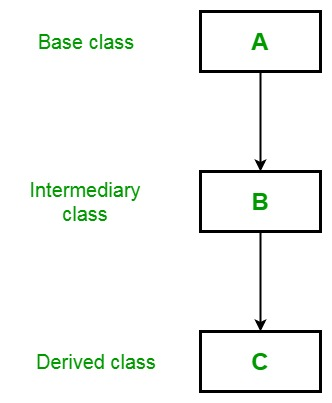
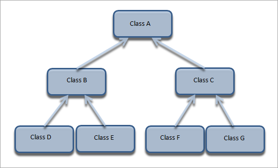

Note:The conditional expressions used in the if, for, while and do statements must be valid boolean expressions i.e. their values should be either true or false.
Note:In Java, switch expression can be any integer expression except long
Scanner class:
This is a new class in Java added in JDK1.5-6-7 version to take input of primitivedata type from the user. It is very easy to take input using this class as we have to only create an object of this class and have to call a particular method. This class is available in java.util package.
import java.util.Scanner;
public class ScannerExample {
public static void main(String[] args) {
Scanner sc = new Scanner(System.in);
System.out.print("please enter your name: ");
String name = sc.next();
System.out.print("pleaseenter your age: ");
int age = sc.nextInt();
System.out.print("Are you married?(true/false): ");
boolean isMarried = sc.nextBoolean();
System.out.print("enter your mobile no: ");
long mobileNo = sc.nextLong();
System.out.println("Name:\t"+name);
System.out.println("Age:\t"+age);
System.out.println("isMarried:\t"+isMarried);
System.out.println("mobileNo:\t"+mobileNo);
}
}
test.txt
This is the line 1.
This is the line 2.
This is the line 3.
This is the line 4.
This is the line 5.
This is the line 6.
This is the line 7.
import java.io.File;
import java.io.FileNotFoundException;
import java.util.Scanner;
public class Example2 {
public static void main(String[] args) {
try {
Scanner sc = new Scanner(new File("/home/ranga/eclipse-workspace-testng/TestingTheJava8/test.txt"));
while(sc.hasNextLine()) {
System.out.println(sc.nextLine());
}
} catch (FileNotFoundException e) {
e.printStackTrace();
}
}
}
output
This is the line 1.
This is the line 2.
This is the line 3.
This is the line 4.
This is the line 5.
This is the line 6.
This is the line 7.
import java.util.Scanner;
public class Example2 {
public static void main(String[] args) {
String input = "1 fish 2 fish red fish blue fish";
Scanner s = new Scanner(input).useDelimiter("\\s*fish\\s*");
System.out.println(s.nextInt());
System.out.println(s.nextInt());
System.out.println(s.next());
System.out.println(s.next());
s.close();
}
}
output
1
2
red
blue
Modifier and Type Method and Description
void close()
Closes this scanner.
Pattern delimiter()
Returns the Pattern this Scanner is currently using to match delimiters.
String findInLine(Pattern pattern)
Attempts to find the next occurrence of the specified pattern ignoring delimiters.
String findInLine(String pattern)
Attempts to find the next occurrence of a pattern constructed from the specified string, ignoring delimiters.
String findWithinHorizon(Pattern pattern, int horizon)
Attempts to find the next occurrence of the specified pattern.
String findWithinHorizon(String pattern, int horizon)
Attempts to find the next occurrence of a pattern constructed from the specified string, ignoring delimiters.
boolean hasNext()
Returns true if this scanner has another token in its input.
boolean hasNext(Pattern pattern)
Returns true if the next complete token matches the specified pattern.
boolean hasNext(String pattern)
Returns true if the next token matches the pattern constructed from the specified string.
boolean hasNextBigDecimal()
Returns true if the next token in this scanner's input can be interpreted as a BigDecimal using the nextBigDecimal() method.
boolean hasNextBigInteger()
Returns true if the next token in this scanner's input can be interpreted as a BigInteger in the default radix using the nextBigInteger() method.
boolean hasNextBigInteger(int radix)
Returns true if the next token in this scanner's input can be interpreted as a BigInteger in the specified radix using the nextBigInteger() method.
boolean hasNextBoolean()
Returns true if the next token in this scanner's input can be interpreted as a boolean value using a case insensitive pattern created from the string "true|false".
boolean hasNextByte()
Returns true if the next token in this scanner's input can be interpreted as a byte value in the default radix using the nextByte() method.
boolean hasNextByte(int radix)
Returns true if the next token in this scanner's input can be interpreted as a byte value in the specified radix using the nextByte() method.
boolean hasNextDouble()
Returns true if the next token in this scanner's input can be interpreted as a double value using the nextDouble() method.
boolean hasNextFloat()
Returns true if the next token in this scanner's input can be interpreted as a float value using the nextFloat() method.
boolean hasNextInt()
Returns true if the next token in this scanner's input can be interpreted as an int value in the default radix using the nextInt() method.
boolean hasNextInt(int radix)
Returns true if the next token in this scanner's input can be interpreted as an int value in the specified radix using the nextInt() method.
boolean hasNextLine()
Returns true if there is another line in the input of this scanner.
boolean hasNextLong()
Returns true if the next token in this scanner's input can be interpreted as a long value in the default radix using the nextLong() method.
boolean hasNextLong(int radix)
Returns true if the next token in this scanner's input can be interpreted as a long value in the specified radix using the nextLong() method.
boolean hasNextShort()
Returns true if the next token in this scanner's input can be interpreted as a short value in the default radix using the nextShort() method.
boolean hasNextShort(int radix)
Returns true if the next token in this scanner's input can be interpreted as a short value in the specified radix using the nextShort() method.
IOException ioException()
Returns the IOException last thrown by this Scanner's underlying Readable.
Locale locale()
Returns this scanner's locale.
MatchResult match()
Returns the match result of the last scanning operation performed by this scanner.
String next()
Finds and returns the next complete token from this scanner.
String next(Pattern pattern)
Returns the next token if it matches the specified pattern.
String next(String pattern)
Returns the next token if it matches the pattern constructed from the specified string.
BigDecimal nextBigDecimal()
Scans the next token of the input as a BigDecimal.
BigInteger nextBigInteger()
Scans the next token of the input as a BigInteger.
BigInteger nextBigInteger(int radix)
Scans the next token of the input as a BigInteger.
boolean nextBoolean()
Scans the next token of the input into a boolean value and returns that value.
byte nextByte()
Scans the next token of the input as a byte.
byte nextByte(int radix)
Scans the next token of the input as a byte.
double nextDouble()
Scans the next token of the input as a double.
float nextFloat()
Scans the next token of the input as a float.
int nextInt()
Scans the next token of the input as an int.
int nextInt(int radix)
Scans the next token of the input as an int.
String nextLine()
Advances this scanner past the current line and returns the input that was skipped.
long nextLong()
Scans the next token of the input as a long.
long nextLong(int radix)
Scans the next token of the input as a long.
short nextShort()
Scans the next token of the input as a short.
short nextShort(int radix)
Scans the next token of the input as a short.
int radix()
Returns this scanner's default radix.
void remove()
The remove operation is not supported by this implementation of Iterator.
Scanner reset()
Resets this scanner.
Scanner skip(Pattern pattern)
Skips input that matches the specified pattern, ignoring delimiters.
Scanner skip(String pattern)
Skips input that matches a pattern constructed from the specified string.
String toString()
Returns the string representation of this Scanner.
Scanner useDelimiter(Pattern pattern)
Sets this scanner's delimiting pattern to the specified pattern.
Scanner useDelimiter(String pattern)
Sets this scanner's delimiting pattern to a pattern constructed from the specified String.
Scanner useLocale(Locale locale)
Sets this scanner's locale to the specified locale.
Scanner useRadix(int radix)
Sets this scanner's default radix to the specified radix.
Array
An array in Java is an ordered collection of the similar type of variables or data
items. Java allows arrays of any dimension. An array in Java is a bit different from C/C++.
We can not specify the size of the array at the time of declaration. The memory allocation
is always dynamic. Every array in Java is treated as an object with one special attribute
length, which specifies the number of elements in the array.
One-Dimensional array:
// Declaration
type array_name[];
type[] array_name;
examples:
int age[];
int[] age;
String names[];
String[] names;
//Initialization
array_name = new type[SIZE]; //SIZE can be constant or a variable
age = new int[5];
names = new String[10];
//Declaration and Initialization
type array_name[] = new array_name[SIZE]; //SIZE can be constant or a variable
Long[] phoneNumbers = new Long[10];
Long[] phoneNumbers = new Long[10];
phoneNumbers[0] = 9876543210l;
phoneNumbers[1] = 8765432109l;
phoneNumbers[2] = 7654321089l;
// and so on
phoneNumbers[9] = 1098765432l;
// we can also below approach
String[] fruits = {"Apple","Orange","Banana","Grapes"};
public class Example2 {
public static void main(String[] args) {
String[] fruits = {"Apple","Orange","Banana","Grapes"};
// length will return no.of elements in array.
for(int i=0;i<fruits.length;i++) {
System.out.println(fruits[i]);
}
}
}
Two Dimensional Array
type[][] array_name;
type array_name[][];
examples:
int ages[][];
int[][] ages;
type[][] array_name = new type[ROWS[COLUMNS];
type array_name[][] = new type[ROWS[COLUMNS];
exaples:
int data[][] = new int[2][2];
int[][] matrixA = new int[3][3];
public class Example2 {
public static void main(String[] args) {
int[][] matrixA = new int[2][2];
matrixA[0][0]=9;
matrixA[0][1]=7;
matrixA[1][0]=6;
matrixA[1][1]=4;
for(int i=0;i<2;i++) {
for(int j=0;j<2;j++) {
System.out.print(matrixA[i][j]+"\t");
}
System.out.println();
}
}
}
output
9 7
6 4
public class Example2 {
public static void main(String[] args) {
int[][] matrixA = {{9,6,3},{8,5,2},{7,4,1}};
for(int i=0;i<3;i++) {
for(int j=0;j<3;j++) {
System.out.print(matrixA[i][j]+"\t");
}
System.out.println();
}
}
}
output
9 6 3
8 5 2
7 4 1
Command Line Arguments
Hello.java
public class Example2 {
public static void main(String[] args) {
for(int i=0;i<args.length;i++) {
System.out.println("Hello "+args[i]);
}
}
}
Running the program
javac Hello.java
java Hello John Doe Sena
output
Hello John
Hello Doe
Hello Sena
class and objects
this keyword
Observe the below program
class Example100{
int x;
public void setValueX(int x) {
x=x;
}
public int getValueX() {
return x;
}
}
public class Example10 {
public static void main(String[] args) {
Example100 e = new Example100();
e.setValueX(156);
System.out.println(e.getValueX());
}
}
ouput
0
This is because class variable and local variable(x) area same. so JVM thinks it is the same variable, so it assigns itself default valu (0 for int)
to over come this problem either you have to change the local variable name or use this keyword like below.
class Example100{
int x;
public void setValueX(int x) {
this.x=x;
}
public int getValueX() {
return x;
}
}
public class Example10 {
public static void main(String[] args) {
Example100 e = new Example100();
e.setValueX(156);
System.out.println(e.getValueX());
}
}
output
156
If you provide different names for local and class variables no need to use this keyword. like below
class Example100{
int x;
public void setValueX(int y) {
x=y;
}
public int getValueX() {
return x;
}
}
public class Example10 {
public static void main(String[] args) {
Example100 e = new Example100();
e.setValueX(156);
System.out.println(e.getValueX());
}
}
output
156
this keyword refers the same object where it is defined.
class A{
int x;
int y;
}
public class Example2 {
public static void main(String[] args) {
A a1 = new A();
A a2 = new A();
a1.x = 10;
a1.y = 20;
a2.x = 30;
a2.y = 40;
System.out.println(a1.x);
System.out.println(a1.y);
System.out.println(a2.x);
System.out.println(a2.y);
}
}
output
10
20
30
40
class containing member variables & member methods
class Student{
String firstName;
String lastName;
public void setData(String firstName,String lastName) {
this.firstName=firstName;
this.lastName=lastName;
}
public void displayData() {
System.out.println("First Name: "+this.firstName);
System.out.println("Last Name: "+this.lastName);
}
}
public class Example2 {
public static void main(String[] args) {
Student john = new Student();
john.setData("John", "Doe");
john.displayData();
}
}
First Name: John
Last Name: Doe
class Student{
private String firstName;
private String lastName;
public void setData(String firstName,String lastName) {
this.firstName=firstName;
this.lastName=lastName;
}
private String getFullName() {
return this.firstName+" "+this.lastName;
}
public void displayData() {
System.out.println("First Name: "+this.firstName);
System.out.println("Last Name: "+this.lastName);
System.out.println("Full Name: "+this.getFullName());
}
}
public class Example2 {
public static void main(String[] args) {
Student john = new Student();
john.setData("John", "Doe");
john.displayData();
}
}
First Name: John
Last Name: Doe
Full Name: John Doe
Inner class supports
public class Example5 {
class A{}
public class B{}
private class C{}
protected class D{}
static class E{}
final class F{}
abstract class G{}
}
public class Example7 {
int a;
public int b;
private int c;
protected int d;
static int e;
final int f = 12; //If a variable is final we must initialize the variable
transient int g;
volatile int h;
}
local variables only supports default and final modifiers
public class Example8 {
void A() {
int a;
final int b=15;
}
}
static blocks automatically called
public class Example9 {
static{
System.out.println("I am static A");
}
static{
System.out.println("I am static C");
}
public static void main(String[] args) {
}
static{
System.out.println("I am static D");
}
static{
System.out.println("I am static B");
}
}
output
I am static A
I am static C
I am static D
I am static B
problem
Error: LinkageError occurred while loading main class rough
java.lang.UnsupportedClassVersionError: rough has been compiled by a more recent version of the Java Runtime (class file version 61.0), this version of the Java Runtime only recognizes class file versions up to 55.0
solution
This is just a version mismatch. You have compiled your code using java version 17 and your current JRE is version 11. Try upgrading your JRE to 17.
We can compile the program without main method but we can not execute.
public class Example10 {
}
Error: Main method not found in class Example10, please define the main method as:
public static void main(String[] args)
or a JavaFX application class must extend javafx.application.Application
Method Overloading:
We can have more than one method with the same name as long as they differ
either in numbers of parameters or type of parameters or order of parameters. This is
called method overloading.
While calling an overloaded method it is possible that type of the actual
parameters passed may not match exactly with the formal parameters of any of the
overloaded methods. In that case parameter are promoted to next higher type till a match
is found. If no match is found even after promoting the parameters then a compilation
error occurs.
public class Example10 {
public static void sayHello() {
System.out.println("Hello");
}
public static void sayHello() {
System.out.println("Hello");
}
public static void main(String[] args) {
sayHello();
}
}
Example10.java:7: error: method sayHello() is already defined in class Example10
public static void sayHello() {
^
1 error
public class Example10 {
public static long addition(int a,int b) {
return a+b;
}
public static long addition(int a,int b) {
return a+b;
}
public static void main(String[] args) {
System.out.println(addition(10, 20));
}
}
If we run above program we will get compilation error. saying method addition already defined.
The same program we can as like below
public class Example10 {
public static long addition(int a,int b) {
return a+b;
}
public static long addition(byte a,int b) {
return a+b;
}
public static long addition(int a,byte b) {
return a+b;
}
public static long addition(byte a,byte b) {
return a+b;
}
public static long addition(short a,short b) {
return a+b;
}
public static long addition(int a,int b,int c) {
return a+b+c;
}
public static void main(String[] args) {
System.out.println(addition(10, 20));
System.out.println(addition(10, 20,30));
}
}
output
30
60
Constructors
It is very common requirement to initialize an object immediately after creation.
We can define instance methods for this purpose but they have to be invoked explicitly.
Java has a solution for this requirement. Java allows objects to initialize
themselves when they are created using constructors. It has the same
Constructors have the same name as the class and do not have any return type.
This is because the implicit return type of class’s constructor is the class itself.
Constructors can be overloaded just like methods.
When operator new is used to create an instance/object of a class, JVM allocates
memory for the object, then initializes the instance variables to their default initial values,
and then calls the appropriate constructor to initialize the instance variables.
The name constructor is a bit confusing. It appears as if the purpose of the
constructor is to create an object/instance. The object is created and instance variables and
static variables are initialized to their default initial values before constructor is called.
So the purpose of the constructor is to initialize the instance variables with values
other than the default values.
Type of constructors
Default Constructor:
Every class has a default constructor (if no
explicit constructor is defined) that does not take any argument and its body
does not have any statements. The compiler generates the default
constructor automatically.
The compiler stops generating default constructor as soon as we add
our own constructor. When we do not create any constructor in the class
then JVM will create the default constructor and initialize the instance
variable with default values null or zero.
class Example111{
String name;
int age;
double salary;
boolean isMarried;
public void displayData() {
System.out.println("Name : "+name);
System.out.println("Age : "+age);
System.out.println("Salary : "+salary);
System.out.println("isMarried: "+isMarried);
}
}
public class Example11 {
public static void main(String[] args) {
Example111 e = new Example111();
e.displayData();
}
}
output
Name : null
Age : 0
Salary : 0.0
isMarried: false
Default Zero argument constructors
We can replace the default
constructor with our own zero argument constructor. This will allow us to
initialize the instance variables to any value.
Parameterized Constructors:
A constructor which takes
parameters is called as parameterized constructors.
Note:It is possible to overload the constructor just like methods. It is called as constructor overloading.
Name : null
Age : 0
Salary : 0.0
isMarried: false
*****************************
Name : John Doe
Age : 0
Salary : 0.0
isMarried: false
*****************************
Name : John Doe
Age : 35
Salary : 0.0
isMarried: false
*****************************
Name : john Doe
Age : 35
Salary : 125000.0
isMarried: false
*****************************
Name : john Doe
Age : 35
Salary : 125000.0
isMarried: true
*****************************
Type of Variables
Instance variables:
Variable declared in a class as a member outside all member methods are known as
instance variable. There will be as many copies of that variable as there are number of
objects.
There is no need to initialize instance variable in Java because these variables are
initialized as soon as the object is created and the memory is allocated with the new
operator.
Local Variables:
Variables declared inside a method is known as Local variable. It is not same as
instance variable. There is no automatic initialization for the Local variable.
Static Variables:
Static variables are also declared outside methods/blocks like instance variables.
But the static variables make use of the modifier static before the data type. Static
variables are global to a class and all of its instances (objects).
They are useful for keeping track of global states. For example, a static variable
count in a class can store the number of instances/objects of the class created in the
program at any instance of time.
For static variables there is only one copy of the
variable irrespective of number of instances/objects created in the program, which is
shared across all the instances.
Static variable is initialized automatically with their default values (zero, false or
null) as soon as the class is loaded / used.
They can only call other static methods. They must only access static data.
class Example122{
int x; //instance variable
static int y; //static or class variables
public void setDate() {
int z = 125; //local variables
}
}
public class Example12 {
public static void main(String[] args) {
Example122 e = new Example122();
e.x=15;//instance variable initialization
Example122.y=255; // static variable initialization
}
}
Type of Methods
Instance methods:
Instance methods can be invoked only through
object. If we call a instance method inside a static method of same class then also we have
to use object name.
Static Methods:
Static methods can be invoked using object as well as class name. Static methods
can access only static members. Static methods can be called directly (without object or
class name) from a static method of same class.
Initialize & static Block
Initialize block is used to initialize instance member variables of the class
static block is used to initialize static member variables of the class.
But constructor is called after these blocks.
class Example133{
int x;
int y;
static int a;
static int b;
{
x = 15;
y = 25;
}
static {
a = 30;
b = 40;
}
public int getSum() {
return x+y;
}
public static int getStaticSum() {
return a+b;
}
}
public class Example13 {
public static void main(String[] args) {
Example133 e = new Example133();
System.out.println("getSum : "+e.getSum());
System.out.println("getStaticSum using instance(object): "+e.getStaticSum()); //We can call static methods with instances as well as class name
System.out.println("getStaticSum using class name : "+Example133.getStaticSum()); //calling static method using class name
}
}
output
getSum : 40
getStaticSum using instance(object): 70
getStaticSum using class name : 70
class Example144{
Example144(){
System.out.println("I am constructor.");
}
{
System.out.println("I am initialize block2");
}
static{
System.out.println("I am static block2");
}
{
System.out.println("I am initialize block1");
}
static{
System.out.println("I am static block1");
}
}
public class Example14 {
public static void main(String[] args) {
Example144 e = new Example144();
}
}
output
I am static block2
I am static block1
I am initialize block2
I am initialize block1
I am constructor.
public class Example15 {
public void iamInstanceMethod() {
System.out.println("I am Instance Method");
}
public static void iamStaticMethod() {
System.out.println("I am Static method");
}
public static void main(String[] args) {
Example15 e = new Example15();
e.iamInstanceMethod();
e.iamStaticMethod(); // static method calling using instance(object)
Example15.iamStaticMethod(); // static method calling using class name
iamStaticMethod(); // directly calling static method because main is a static method
}
}
output
I am Instance Method
I am Static method
I am Static method
I am Static method
Final
Final Variables:
If a variable is declared as final then we can not change its value final (double
PI=3.141;) final variable do not occupy memory on a per instance basis. A final variable
is a constant variable its value can not be change. A final variable reference type can not
change its reference.
public class Example16 {
public static void main(String[] args) {
final int X = 25;
final int Y;
Y=23;
System.out.println("X value: "+X);
System.out.println("Y value: "+Y);
}
}
outpur
X value: 25
Y value: 23
public class Example17 {
public static void main(String[] args) {
final int X = 25;
X = 45;
System.out.println("X value: "+X);
}
}
output
Exception in thread "main" java.lang.Error: Unresolved compilation problem:
The final local variable X cannot be assigned. It must be blank and not using a compound assignment
at testingTheJava8.Example17.main(Example17.java:8)
Inheritance
class A{
private int x;
public void setX(int x1) {
x=x1;
}
public int getX() {
return x;
}
}
class B extends A{
private int y;
public void setY(int y1) {
y=y1;
}
public int getY() {
return y;
}
}
public class Example17 {
public static void main(String[] args) {
A a1 = new A();
a1.setX(15);
System.out.println(a1.getX());
B b1 = new B();
b1.setX(20);
b1.setY(30);
System.out.println(b1.getX());
System.out.println(b1.getY());
}
}
output
15
20
30
class A{
A(){
System.out.println("I am construtor from class A");
}
}
class B extends A{
B(){
System.out.println("I am constructor from class B");
}
}
public class Example18 {
public static void main(String[] args) {
A a = new A();
}
}
output
I am construtor from class A
class A{
A(){
System.out.println("I am construtor from class A");
}
}
class B extends A{
B(){
System.out.println("I am constructor from class B");
}
}
public class Example18 {
public static void main(String[] args) {
B b = new B();
}
}
out put
I am construtor from class A
I am constructor from class B
Member Hiding:
If a sub-class member has the same name (and same signature in case of
methods) as that of a super-class member then it hides the super-class member.
Although both the members might be available in the sub-class but using member
name we can only access sub-class member as it hides the member of the same name in
the super-class.
Using keyword super
Whenever a subclass needs to refer to its immediate super class, it can do so by
use of keyword super. super has two general uses:
Calling super class’s constructor
A subclass can call a constructor method defined by its super class by use of the
following form of super.
super (parameter-list);
Here, parameter-list specifies any parameters needed by the constructor in the
super class. In fact super() must always be the first statement executed inside a
subclass’s constructor.
Accessing a member of the super class that has been hidden by a member of a
subclass.
The keyword super can be used to access the hidden members of the super as
follows:
super.member;
Here, member can be either a method or a data member.
class Parent{
public String name;
Parent(String name){
this.name=name;
}
public String getName() {
return name;
}
}
class Child extends Parent{
public String name;
Child(String pname,String cname){
super(pname);
this.name=cname;
}
public String getName() {
return name;
}
}
public class Example19 {
public static void main(String[] args) {
Child ramu = new Child("Dasarath", "ramu");
System.out.println(ramu.getName());
}
}
output
ramu
class Parent{
public String name;
Parent(String name){
this.name=name;
}
public String getName() {
return name;
}
}
class Child extends Parent{
public String name;
Child(String pname,String cname){
super(pname);
this.name=cname;
}
public String getName() {
System.out.println(super.getName());
return name;
}
}
public class Example19 {
public static void main(String[] args) {
Child ramu = new Child("Dasarath", "ramu");
System.out.println(ramu.getName());
}
}
output
Dasarath
ramu
Method Overloading and Method Overriding:
Method Overloading:
When two or more methods having same name but different parameters then it is
said to be a methods overloading. Method overloading is used when object are required to
perform similar task but using different input parameters.
When we call a method, java matches up the method name first and then the
number and type of parameters. To decide which one of the method definition is to called
is known as polymorphism.
Method Overriding:
We have seen that a method in a super class is inherited by its subclass and is
used by the object created by the subclass. Method inheritance enables us to define and
use method repeatedly in subclass without having to define the method again in
subclass.
In the class hierarchy, when an instance method in a subclass has the same name
signature as an instance method (non private) in its super class, then the method in the
subclass is said to override the method in the super class.
When an overridden method is called from within a subclass, it will always refer
to the version of that method defined by the subclass. The version of the method defined
by the super class will be hidden.
class Parent{
public void sayHello() {
System.out.println("Hello from class Parent");
}
}
class Child extends Parent{
public void sayHello() {
System.out.println("Hello from class Child");
}
}
public class Example19 {
public static void main(String[] args) {
Child ramu = new Child();
ramu.sayHello();
}
}
output
Hello from class Child
Java support the following inheritance:
Single inheritance.
Multilevel inheritance.
Hierarchical Inheritance.
Single inheritance

class A{
//body
}
class B extends A{
//body
}
Multilevel inheritance

class A{
//body
}
class B extends A{
//body
}
class C extends B{
//body
}
Hierarchical Inheritance

class A{
//body
}
class B extends A{
//body
}
class D extends B{
//body
}
class E extends B{
//body
}
class C extends A{
//body
}
class F extends C{
//body
}
class G extends C{
//body
}
Java Abstraction
Data abstraction is the process of hiding certain details and showing only essential information to the user.
We daily use Mobile/Cell phones for multiple purposes but we dont know how it is working.we(customer) no need to know about this
Abstraction can be achieved with either abstract classes or interfaces.
Abstract Methods and Classes
An abstract class is a class that is declared abstract—it may or may not include abstract methods. Abstract classes cannot be instantiated, but they can be subclassed.
An abstract method is a method that is declared without an implementation (without braces, and followed by a semicolon), like this:
If a class includes abstract methods, then the class itself must be declared abstract, as in:
public abstract class GraphicObject {
// declare fields
// declare nonabstract methods
abstract void draw();
}
When an abstract class is subclassed, the subclass usually provides implementations for all of the abstract methods in its parent class. However, if it does not, then the subclass must also be declared abstract.
abstract methods allow only public and protected modifiers
abstract class L{
abstract public void a();
abstract protected void b();
}
Consider using abstract classes if any of these statements apply to your situation:
You want to share code among several closely related classes.
You expect that classes that extend your abstract class have many common methods or fields, or require access modifiers other than public (such as protected and private).
You want to declare non-static or non-final fields. This enables you to define methods that can access and modify the state of the object to which they belong.
An example of an abstract class in the JDK is AbstractMap, which is part of the Collections Framework. Its subclasses (which include HashMap, TreeMap, and ConcurrentHashMap) share many methods (including get, put, isEmpty, containsKey, and containsValue) that AbstractMap defines.
An Abstract Class Example:
In an object-oriented drawing application, you can draw circles, rectangles, lines, Bezier curves, and many other graphic objects. These objects all have certain states (for example: position, orientation, line color, fill color) and behaviors (for example: moveTo, rotate, resize, draw) in common. Some of these states and behaviors are the same for all graphic objects (for example: position, fill color, and moveTo). Others require different implementations (for example, resize or draw). All GraphicObjects must be able to draw or resize themselves; they just differ in how they do it. This is a perfect situation for an abstract superclass. You can take advantage of the similarities and declare all the graphic objects to inherit from the same abstract parent object (for example, GraphicObject) as shown in the following figure.
First, you declare an abstract class, GraphicObject, to provide member variables and methods that are wholly shared by all subclasses, such as the current position and the moveTo method. GraphicObject also declares abstract methods for methods, such as draw or resize, that need to be implemented by all subclasses but must be implemented in different ways. The GraphicObject class can look something like this:
abstract class GraphicObject {
int x, y;
...
void moveTo(int newX, int newY) {
...
}
abstract void draw();
abstract void resize();
}
Each nonabstract subclass of GraphicObject, such as Circle and Rectangle, must provide implementations for the draw and resize methods:
abstract class Vehicle{
abstract void wheels();
}
class Auto extends Vehicle{
public void wheels() {
System.out.println("Auto has 3 wheels");
}
}
class Car extends Vehicle{
public void wheels() {
System.out.println("Car has 3 wheels");
}
}
public class Example20 {
public static void main(String[] args) {
Auto auto = new Auto();
auto.wheels();
Car car = new Car();
car.wheels();
}
}
output
Auto has 3 wheels
Car has 3 wheels
abstract class Animal {
abstract void makeSound();
public void eat() {
System.out.println("I can eat.");
}
}
class Dog extends Animal {
// provide implementation of abstract method
public void makeSound() {
System.out.println("Bark bark");
}
}
class Main {
public static void main(String[] args) {
// create an object of Dog class
Dog d1 = new Dog();
d1.makeSound();
d1.eat();
}
}
Key Points to Remember
We use the abstract keyword to create abstract classes and methods.
An abstract method doesn't have any implementation (method body).
A class containing abstract methods should also be abstract.
We cannot create objects of an abstract class.
To implement features of an abstract class, we inherit subclasses from it and create objects of the subclass.
A subclass must override all abstract methods of an abstract class. However, if the subclass is declared abstract, it's not mandatory to override abstract methods.
We can access the static attributes and methods of an abstract class using the reference of the abstract class. For example,
Final method:
If we don’t want a method to be overridden by a derived class method then we
can define the base class method as final. Any attempt to override that method will cause a
compile time error.
class L{
final void sayHello() {
System.out.println("Heelo");
}
}
class M extends L{
void sayHello() {
System.out.println("Hello");
}
}
public class Example20 {
public static void main(String[] args) {
M m = new M();
m.sayHello();
}
}
output
Exception in thread "main" java.lang.IncompatibleClassChangeError: class testingTheJava8.M overrides final method testingTheJava8.L.sayHello()V
at java.base/java.lang.ClassLoader.defineClass1(Native Method)
at java.base/java.lang.ClassLoader.defineClass(ClassLoader.java:1012)
at java.base/java.security.SecureClassLoader.defineClass(SecureClassLoader.java:150)
at java.base/jdk.internal.loader.BuiltinClassLoader.defineClass(BuiltinClassLoader.java:862)
at java.base/jdk.internal.loader.BuiltinClassLoader.findClassOnClassPathOrNull(BuiltinClassLoader.java:760)
at java.base/jdk.internal.loader.BuiltinClassLoader.loadClassOrNull(BuiltinClassLoader.java:681)
at java.base/jdk.internal.loader.BuiltinClassLoader.loadClass(BuiltinClassLoader.java:639)
at java.base/jdk.internal.loader.ClassLoaders$AppClassLoader.loadClass(ClassLoaders.java:188)
at java.base/java.lang.ClassLoader.loadClass(ClassLoader.java:520)
at testingTheJava8.Example20.main(Example20.java:18)
final class L{
}
class M extends L{
}
public class Example20 {
public static void main(String[] args) {
M m = new M();
}
}
output
Exception in thread "main" java.lang.Error: Unresolved compilation problem:
The type M cannot subclass the final class L
at testingTheJava8.M.(Example20.java:7)
at testingTheJava8.Example20.main(Example20.java:14)
abstract class allows following methods and variables
abstract class AabstractClass{
int a;
public int b;
private int c;
protected int d;
static int e;
transient int f;
volatile int g;
final int h=15;
void A() {}
public void B() {}
private void C() {}
protected void D() {}
static void E() {}
final void F() {}
synchronized void G() {}
strictfp void H() {}
native void I();
abstract void J();
}
Strings
The String class represents character strings. All string literals in Java programs, such as "abc", are implemented as instances of this class.
Strings are constant; their values cannot be changed after they are created. String buffers support mutable strings. Because String objects are immutable they can be shared.
public class StringMethods {
public static void main(String[] args) {
String name = new String(null);
}
}
output
Exception in thread "main" java.lang.Error: Unresolved compilation problem:
The constructor String(String) is ambiguous
at testingTheJava81.StringMethods.main(StringMethods.java:7)
import java.util.ArrayList;
import java.util.Arrays;
import java.util.List;
public class StringMethods {
public static void main(String[] args) {
String name = "String and StringBuilder";
// charAt(int index) Returns the char value at the specified index.
System.out.println(name.charAt(15)); //n
// compareTo(String anotherString) Compares two strings lexicographically.
System.out.println("a".compareTo("a")); //0
System.out.println("a".compareTo("b")); //-1
System.out.println("b".compareTo("a")); //1
System.out.println("swami".compareTo("swamY")); //16
System.out.println("a".compareTo("A")); //32
// compareToIgnoreCase(String str) Compares two strings lexicographically, ignoring case differences.
System.out.println("a".compareToIgnoreCase("a")); //0
System.out.println("a".compareToIgnoreCase("b")); //-1
System.out.println("b".compareToIgnoreCase("a")); //1
System.out.println("swami".compareToIgnoreCase("swamY")); //-16
System.out.println("a".compareToIgnoreCase("A")); //0
// concat(String str) Concatenates the specified string to the end of this string.
System.out.println("John".concat(" Doe")); //John Doe
//contains(CharSequence s) Returns true if and only if this string contains the specified sequence of char values.
System.out.println("john the king".contains("the")); //true
System.out.println("john the king".contains("The")); //false
//contentEquals(CharSequence cs) Compares this string to the specified CharSequence.
//contentEquals(StringBuffer sb) Compares this string to the specified StringBuffer.
System.out.println("john".contentEquals("john")); //true
System.out.println("john".contentEquals("John")); //false
//endsWith(String suffix) Tests if this string ends with the specified suffix.
System.out.println("john Doe".endsWith("Doe")); //true
System.out.println("john Doe".endsWith("doe")); //false
//equals(Object anObject) Compares this string to the specified object.
System.out.println("john".equals("john")); //true
System.out.println("john".equals("John")); //false
//equalsIgnoreCase(String anotherString) Compares this String to another String, ignoring case considerations.
System.out.println("john".equalsIgnoreCase("john")); //true
System.out.println("john".equalsIgnoreCase("John")); //true
//getBytes() Encodes this String into a sequence of bytes using the platform's default charset, storing the result into a new byte array.
System.out.println("john".getBytes()); //[B@1b701da1
//hashCode() Returns a hash code for this string.
System.out.println("JOhn".hashCode()); //2283787
//indexOf(int ch) Returns the index within this string of the first occurrence of the specified character.
System.out.println("John".indexOf("h")); //2
System.out.println("John".indexOf("y")); //-1
//indexOf(int ch, int fromIndex)
//Returns the index within this string of the first occurrence of the specified character, starting the search at the specified index.
System.out.println("john and johney".indexOf("j")); //0
//indexOf(String str, int fromIndex)
//Returns the index within this string of the first occurrence of the specified substring, starting at the specified index.
System.out.println("john and johney".indexOf("j",5)); //9
// isEmpty() Returns true if, and only if, length() is 0.
System.out.println("johney".isEmpty()); //false
System.out.println(" ".isEmpty()); //false
System.out.println("".isEmpty()); //true
// lastIndexOf(int ch)
// Returns the index within this string of the last occurrence of the specified character.
// lastIndexOf(int ch, int fromIndex)
// Returns the index within this string of the last occurrence of the specified character, searching backward starting at the specified index.
// lastIndexOf(String str)
// Returns the index within this string of the last occurrence of the specified substring.
// lastIndexOf(String str, int fromIndex)
// index within this string of the last occurrence of the specified substring, searching backward starting at the specified index.
System.out.println("john and jenny".lastIndexOf("n")); //12
System.out.println("john and jenny".lastIndexOf("g")); //-1
// length()
// Returns the length of this string.
System.out.println("john".length()); //14
// replace(char oldChar, char newChar)
// Returns a string resulting from replacing all occurrences of oldChar in this string with newChar.
// replace(CharSequence target, CharSequence replacement)
// Replaces each substring of this string that matches the literal target sequence with the specified literal replacement sequence.
// replaceAll(String regex, String replacement)
// Replaces each substring of this string that matches the given regular expression with the given replacement.
System.out.println("john and johney".replace("j", "J")); //John and Johney
System.out.println("john and johney".replaceAll("j", "J")); //John and Johney
System.out.println("john and johney".replace("john", "JOHN")); //JOHN and JOHNey
System.out.println("john and johney".replaceAll("john", "JOHN")); //JOHN and JOHNey
// replaceFirst(String regex, String replacement)
// Replaces the first substring of this string that matches the given regular expression with the given replacement.
System.out.println("john and johney".replaceFirst("john", "JOHN")); //JOHN and johney
// split(String regex)
// Splits this string around matches of the given regular expression.
// split(String regex, int limit)
// Splits this string around matches of the given regular expression.
System.out.println(Arrays.toString("john and johney and jenny are friends".split("")));
// [j, o, h, n, , a, n, d, , j, o, h, n, e, y, , a, n, d, , j, e, n, n, y, , a, r, e, , f, r, i, e, n, d, s]
System.out.println(Arrays.toString("john and johney and jenny are friends".split(" "))); //[john, and, johney, and, jenny, are, friends]
System.out.println(Arrays.toString("john and johney and jenny are friends".split(" ",2)));//[john, and johney and jenny are friends]
System.out.println(Arrays.toString("john and johney and jenny are friends".split("g",2)));//[john and johney and jenny are friends]
// startsWith(String prefix)
// Tests if this string starts with the specified prefix.
System.out.println("john".startsWith("j")); //true
System.out.println("john".startsWith("g")); //false
System.out.println("john and jenny".startsWith("john")); //true
System.out.println("john and jenny".startsWith("jenny")); //false
// substring(int beginIndex)
// Returns a string that is a substring of this string.
// substring(int beginIndex, int endIndex)
// Returns a string that is a substring of this string.
System.out.println("john and johney".substring(5)); //and johney
System.out.println("john and johney".substring(5,10)); //and j
// System.out.println("john and johney".substring(50)); //Exception in thread "main" java.lang.StringIndexOutOfBoundsException: begin 50, end 15, length 15
// System.out.println("john and johney".substring(-5)); //Exception in thread "main" java.lang.StringIndexOutOfBoundsException: begin -5, end 15, length 15
// System.out.println("john and johney".substring(5,100)); //Exception in thread "main" java.lang.StringIndexOutOfBoundsException: begin 5, end 100, length 15
// toCharArray()
// Converts this string to a new character array.
System.out.println("john and jenny".toCharArray()); //john and jenny
// for(char c: "john and jenny".toCharArray()) {
// System.out.print(c+"\t");
// }
// j o h n a n d j e n n y
// toLowerCase()
// Converts all of the characters in this String to lower case using the rules of the default locale.
System.out.println("John and Jenny".toLowerCase()); //john and jenny
// toString()
// This object (which is already a string!) is itself returned.
System.out.println("john".toString()); //john
// toUpperCase()
// Converts all of the characters in this String to upper case using the rules of the default locale.
System.out.println("John and jeny".toUpperCase()); //JOHN AND JENY
// trim()
// Returns a string whose value is this string, with any leading and trailing whitespace removed.
System.out.println(" john ".trim()); //john
// converts other types to String
System.out.println(String.valueOf(false)); //false
System.out.println(String.valueOf(256)); //256
System.out.println(String.valueOf('a')); //a
System.out.println(String.valueOf(456265d));//456265.0
String[] names = {"john","johney","jenny"};
System.out.println(String.join("_", names)); //john_johney_jenny
List names2 = new ArrayList<>(Arrays.asList(new String[]{"john","johney","jenny"}));
System.out.println(String.join("$", names2)); //john$johney$jenny
}
}
StringBuffer
public class StringBufferMethods {
public static void main(String[] args) {
StringBuffer name = new StringBuffer("john");
System.out.println(name); //john
name.append(" the");
System.out.println(name); //john the
System.out.println(name.capacity()); //20
name.delete(6,10);
System.out.println(name); //joh t
name.deleteCharAt(2);
System.out.println(name);//jon t
// name.delete(15, 5); //Exception in thread "main" java.lang.StringIndexOutOfBoundsException: start 15, end 5, length 5
name.delete(1, 1);
System.out.println(name); //jon t
// name.deleteCharAt(-5); //Exception in thread "main" java.lang.StringIndexOutOfBoundsException: index -5, length 5
name.insert(3, "jenny");
System.out.println(name);//jonjenny t
System.out.println(name.reverse()); //t ynnejnoj
}
}
Properties
Properties are configuration values managed as key/value pairs. In each pair, the key and value are both String values. The key identifies, and is used to retrieve, the value, much as a variable name is used to retrieve the variable's value. For example, an application capable of downloading files might use a property named "download.lastDirectory" to keep track of the directory used for the last download.
To manage properties, create instances of java.util.Properties. This class provides methods for the following:
loading key/value pairs into a Properties object from a stream,
retrieving a value from its key,
listing the keys and their values,
enumerating over the keys, and
saving the properties to a stream.
Properties extends java.util.Hashtable. Some of the methods inherited from Hashtable support the following actions:
testing to see if a particular key or value is in the Properties object,
getting the current number of key/value pairs,
removing a key and its value,
adding a key/value pair to the Properties list,
enumerating over the values or the keys,
retrieving a value by its key, and
finding out if the Properties object is empty.
Setting Up the Properties Object
// create and load default properties
Properties defaultProps = new Properties();
FileInputStream in = new FileInputStream("defaultProperties");
defaultProps.load(in);
in.close();
Saving Properties
FileOutputStream out = new FileOutputStream("appProperties");
applicationProps.store(out, "---No Comment---");
out.close();
Getting Property Information
Once the application has set up its Properties object, the application can query the object for information about various keys and values that it contains. An application gets information from a Properties object after start up so that it can initialize itself based on choices made by the user. The Properties class has several methods for getting property information:
contains(Object value) and containsKey(Object key)
Returns true if the value or the key is in the Properties object. Properties inherits these methods from Hashtable. Thus they accept Object arguments, but only String values should be used.
getProperty(String key) and getProperty(String key, String default)
Returns the value for the specified property. The second version provides for a default value. If the key is not found, the default is returned.
list(PrintStream s) and list(PrintWriter w)
Writes all of the properties to the specified stream or writer. This is useful for debugging.
size()
Returns the current number of key/value pairs.
Setting Properties
A user's interaction with an application during its execution may impact property settings. These changes should be reflected in the Properties object so that they are saved when the application exits (and calls the store method). The following methods change the properties in a Properties object:
setProperty(String key, String value)
Puts the key/value pair in the Properties object.
remove(Object key)
Removes the key/value pair associated with key.
System Properties
In Properties, we examined the way an application can use Properties objects to maintain its configuration. The Java platform itself uses a Properties object to maintain its own configuration. The System class maintains a Properties object that describes the configuration of the current working environment. System properties include information about the current user, the current version of the Java runtime, and the character used to separate components of a file path name.
The following table describes some of the most important system properties
Key Meaning
"file.separator" Character that separates components of a file path. This is "/" on UNIX and "\" on Windows.
"java.class.path" Path used to find directories and JAR archives containing class files. Elements of the class path are separated by a platform-specific character specified in the path.separator property.
"java.home" Installation directory for Java Runtime Environment (JRE)
"java.vendor" JRE vendor name
"java.vendor.url" JRE vendor URL
"java.version" JRE version number
"line.separator" Sequence used by operating system to separate lines in text files
"os.arch" Operating system architecture
"os.name" Operating system name
"os.version" Operating system version
"path.separator" Path separator character used in java.class.path
"user.dir" User working directory
"user.home" User home directory
"user.name" User account name
Reading System Properties
The System class has two methods used to read system properties: getProperty and getProperties.
System.getProperty("path.separator");
The getProperty method returns a string containing the value of the property. If the property does not exist, this version of getProperty returns null.
Writing System Properties
import java.io.FileInputStream;
import java.util.Properties;
public class PropertiesTest {
public static void main(String[] args)
throws Exception {
// set up new properties object
// from file "myProperties.txt"
FileInputStream propFile =
new FileInputStream( "myProperties.txt");
Properties p =
new Properties(System.getProperties());
p.load(propFile);
// set the system properties
System.setProperties(p);
// display new properties
System.getProperties().list(System.out);
}
}
Environment Variables
Many operating systems use environment variables to pass configuration information to applications. Like properties in the Java platform, environment variables are key/value pairs, where both the key and the value are strings. The conventions for setting and using environment variables vary between operating systems, and also between command line interpreters. To learn how to pass environment variables to applications on your system, refer to your system documentation.
On the Java platform, an application uses System.getenv to retrieve environment variable values. Without an argument, getenv returns a read-only instance of java.util.Map, where the map keys are the environment variable names, and the map values are the environment variable values. This is demonstrated in the EnvMap example:
import java.util.Map;
public class EnvMap {
public static void main (String[] args) {
Map env = System.getenv();
for (String envName : env.keySet()) {
System.out.format("%s=%s%n",
envName,
env.get(envName));
}
}
}
The term exception is shorthand for the phrase "exceptional event."
Definition: An exception is an event, which occurs during the execution of a program, that disrupts the normal flow of the program's instructions.
When an error occurs within a method, the method creates an object and hands it off to the runtime system. The object, called an exception object, contains information about the error, including its type and the state of the program when the error occurred. Creating an exception object and handing it to the runtime system is called throwing an exception.
After a method throws an exception, the runtime system attempts to find something to handle it. The set of possible "somethings" to handle the exception is the ordered list of methods that had been called to get to the method where the error occurred. The list of methods is known as the call stack (see the next figure).
The runtime system searches the call stack for a method that contains a block of code that can handle the exception. This block of code is called an exception handler. The search begins with the method in which the error occurred and proceeds through the call stack in the reverse order in which the methods were called. When an appropriate handler is found, the runtime system passes the exception to the handler. An exception handler is considered appropriate if the type of the exception object thrown matches the type that can be handled by the handler.
The exception handler chosen is said to catch the exception. If the runtime system exhaustively searches all the methods on the call stack without finding an appropriate exception handler, as shown in the next figure, the runtime system (and, consequently, the program) terminates.
Using exceptions to manage errors has some advantages over traditional error-management techniques. You can learn more in the Advantages of Exceptions section.
The Catch or Specify Requirement
Valid Java programming language code must honor the Catch or Specify Requirement. This means that code that might throw certain exceptions must be enclosed by either of the following:
A try statement that catches the exception. The try must provide a handler for the exception.
A method that specifies that it can throw the exception. The method must provide a throws clause that lists the exception.